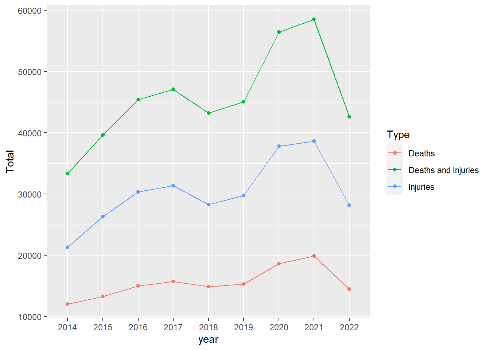
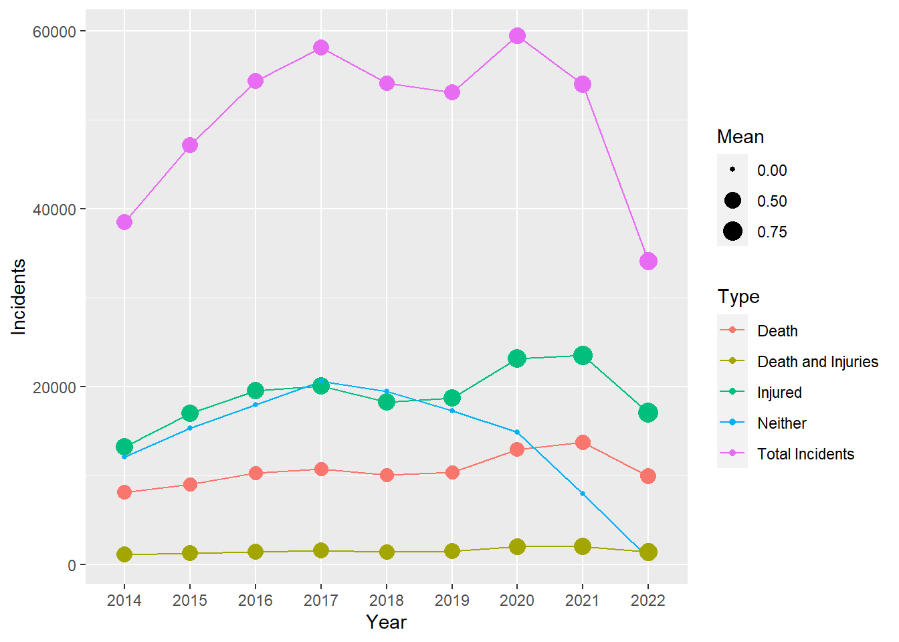
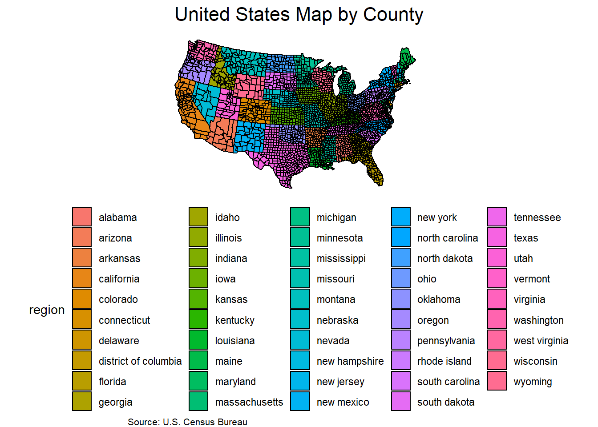

Code
library(tidyverse)This midterm assignment I will be doing an exploratory analysis on gun violence in the US.
Pundits are tasked with providing unbiased reporting on new information, as it develops to inform their audiences, in order for society to adapt or adjust to the developing situation. To aid in this effort, many institutions or groups exist to aggregate data on various topics of interest such as gun violence and is often widely available for academics or internet sleuths to analyze, visualize, and interpret. The culmination of these efforts is often a report to answer pertinent questions to topics societies are concerned with.
Here in the U.S. any citizen has the right to own firearms. However, the proliferation of firearms has many concerned on public safety and crimes committed with firearms. From your average Joe to politicians at the federal level, opinions differ on the threats posed and consequences of wide-spread availability of firearms, ability to conceal or openly carry a firearm. The the advent of social media has increased the flow of information and based on increased reporting of gun related crimes, the topic of firearms back into the forefront of average citizens and policy-makers. However, some people consider the increased reporting on crimes a product of increased flow of information and could mislead society and policy makers into believing crime, in particular gun crime is out of control.
Therefore in an effort to inform those concerned on the topic of firearms, I will present and interpret the data set described below in an intuitive and discernible manner. One of the main overarching question(s) that will be addressed is:
Figures made and presented in this post will be based mainly on a U.S. Gun Violence Data set containing gun violence incidents, retrieved from Kaggle.com on 3/21/2023. However, the data set was originally collected from gunviolencearchive.org.
To help the reader understand the keys and attributes available in the data set, an example of the data is displayed and each column header is defined to ensure understanding what values and observations mean.
If any additional or supplemental data used in any visualizations will be mentioned in figure description.
library(tidyverse)gundata <- read.csv("Gun violence data 1.csv")
glimpse(gundata)Rows: 452,787
Columns: 7
$ Incident_ID <int> 92114, 92117, 92119, 92125, 92129, 92133, 92135, 92137,~
$ Incident_Date <chr> "1/1/2014", "1/1/2014", "1/1/2014", "1/1/2014", "1/1/20~
$ State_Code <chr> "KY", "KY", "KY", "OK", "OK", "NY", "NY", "NY", "NY", "~
$ City_Or_County <chr> "Lexington", "Cynthiana", "Louisville", "Lawton", "Okmu~
$ Address <chr> "Sixth St and Elm Tree Ln", "US 62", "S 38th St and W B~
$ Killed <int> 0, 0, 0, 0, 0, 0, 1, 0, 0, 0, 0, 0, 0, 1, 0, 1, 1, 0, 0~
$ Injured <int> 1, 1, 1, 0, 2, 1, 0, 1, 1, 1, 1, 3, 1, 0, 1, 0, 0, 1, 1~gundata_attributes <- read.csv("Gun_violence_data_descriptions.csv")
knitr::kable(gundata_attributes)| Column.names | Data.Type | Description |
|---|---|---|
| Incident ID | Item | Unique identifier for each incident |
| Incident Date | Attribute | The month, day, and year the incident occurred |
| State_Code | Position | 2 letter code representing states where incident occurred |
| City_or_County | Position | The city or county where an incident occurred |
| Address | Position | Physical location within a city or county where an incident occurred |
| Killed | Attribute | Number of people killed in the incident |
| Injured | Attribute | Number of people injured in the incident |
We are working with 1 key that identifies each separate gun incident, the dates when incidents occurred, and several position-type data where the incident takes place.
Given we are interested in whether there has been an increase in gun violence/crimes within the recent years, it seems only natural to derive total the number of incidents for each year, across the US.
gundata <- gundata %>%
separate(Incident_Date, sep="/", into = c("month", "day", "year"))
total_by_year <- summarise(group_by(gundata, Year = year), Incidents = n())
ggplot(total_by_year, aes(x= Year, y= Incidents, group = 1)) +
geom_line() + geom_point()
Interestingly, from the year 2014 there was an increase of gun incidents up until 2020, then there was a sharp decline in gun violence to levels less than 2014. Although all violence is tragic, fortunately not every incident results in casualties, but injuries or sometimes neither! Compared to 2014 the amount of gun violence appears to be dropping, but for the incidents that do occur: are more people dying, or getting injured? Lets have a look at whether there was an increase in either deaths, injuries or neither.
Totals <- total_by_year
Both_by_year <- summarise(group_by(gundata[gundata$Killed == 1 & gundata$Injured == 1,], Year = year), Incidents = n())
Casualties_by_year <- summarise(group_by(gundata[gundata$Killed == 1 & gundata$Injured == 0,], Year = year), Incidents = n())
Injuries_by_year <- summarise(group_by(gundata[gundata$Killed == 0 & gundata$Injured == 1,], Year = year), Incidents = n())
neither_by_year <- summarise(group_by(gundata[gundata$Killed == 0 & gundata$Injured == 0,], Year = year), Incidents = n())
Totals <- bind_rows(Totals, Casualties_by_year, Injuries_by_year, neither_by_year, Both_by_year)
Totals$Type <- c(rep_len("Total Incidents", 9), rep("Death", 9), rep("Injured", 9), rep("Neither", 9), rep("Death and Injuries", 9))
ggplot(Totals, aes(x= Year, y= Incidents, group = Type, color = Type)) +
geom_line() + geom_point()
# test: use this as point size? instead of mean or median?
Totals2 <- gundata %>%
group_by(year) %>%
summarise(Total = sum(c(Killed, Injured)))
Casualties_by_year2 <- gundata %>%
group_by(year) %>%
summarise(Total = sum(Killed))
Injuries_by_year2 <- gundata %>%
group_by(year) %>%
summarise(Total = sum(Injured))
# neither_by_year <- summarise(group_by(gundata[gundata$Killed == 0 & gundata$Injured == 0,], Year = year), Incidents = n())
#
# Both_by_year <- gundata %>%
# group_by(year) %>%
# summarise(Total = sum(c(Killed, Injured)))
Totals2 <- bind_rows(Totals2, Casualties_by_year2, Injuries_by_year2)
Totals2$Type <- c(rep_len("Deaths and Injuries", 9), rep("Deaths", 9), rep("Injuries", 9))
ggplot(Totals2, aes(x= year, y= Total, group = Type, color = Type)) +
geom_line() + geom_point()
This is interesting, but perhaps worrying as the data first suggested the U.S. was experiencing less gun violence nationwide. Despite, the total number of violent gun incidents drastically decreased between the years 2020 and 2022, to underneath 2014 levels. However, the amount of deaths and/or injuries per year increased, or at the very least stayed constant! The apparentw decrease in gun incidents is a result of non-casualty incidents decreasing.
It could suggest the likelihood of a death and/or injury occurring per incident is increasing each year, could we possibly reflect that by introducing a new channel like size of each point based on the average number of deaths and/or injuries per incident for each year?
M_KIT_per_year <- gundata %>% # median of total killed and/or injured (including no casualty incidents)
group_by(year) %>%
summarise(mean = mean(c(Killed, Injured)))
M_K_per_year <- gundata %>% # Median of kills per year
group_by(year) %>%
summarise(mean = mean(Killed))
M_I_per_year <- gundata %>%
group_by(year) %>%
summarise(mean = mean(Injured))
Neither <- rep(0, 9)
M_KI_per_year <- gundata %>%
group_by(year) %>%
summarise(mean = mean(c(Killed, Injured)))
Mean <- c(M_KIT_per_year$mean, M_K_per_year$mean, M_I_per_year$mean, Neither, M_KI_per_year$mean)
Totals$Mean <- Mean
ggplot(Totals, aes(x= Year, y= Incidents, group = Type, color = Type)) +
geom_line() + geom_point(aes(size = Mean)) +
scale_size(range = c(1, 5), breaks = c(0, .50, .75))
Although we were able to visually observe some interesting details about the data using line scatter plot idiom, I believe we have reached a limit. We could continue to add additional channels to convey more information, but the last addition of point size to convey number of deaths/injuries per incident works but not very well and arguably cognitively taxing (expressivity or separability?) on the reader to process and interpret.
Lets see if a different idiom, best suits the information we want to convey
On top of that, we are not taking advantage of the postion data. U.S. is a very large and diverse country, are the trends applicable to the entire country? or is each state have its own pattern? what about the county level?
library(maps)# Load the map data
counties <- map_data("county")
# Create the plot
ggplot() +
# Add the map data for the lower 48 states
geom_polygon(data = counties, aes(x = long, y = lat, group = group, fill = region), color = "black") +
# Add the map data for Alaska
geom_polygon(data = subset(counties, region == "alaska"), aes(x = long, y = lat, group = group), color = "red", fill = "black") +
coord_map("albers", lat0 = 39, lat1 = 45) + # Center and zoom the map
# Add the map data for Hawaii
geom_polygon(data = subset(counties, region == "hawaii"), aes(x = long, y = lat, group = group), color = "red", fill = "black") +
# Customize the plot
theme_void() +
ggtitle("United States Map by County") +
labs(caption = "Source: U.S. Census Bureau") +
theme(plot.title = element_text(size = 16, hjust = 0.5),
plot.caption = element_text(size = 8, hjust = 0),
legend.position = "bottom")
# library(sf)
#
# # Download the TIGER/Line shapefile for Alaska counties
# download.file("https://www2.census.gov/geo/tiger/TIGER2020/COUNTY/tl_2020_us_co20.zip", "tl_2020_us_co20.zip")
# unzip("tl_2020_us_co20.zip")
#
# # Read the shapefile into R using sf
# alaska_counties <- st_read("tl_2020_us_co20.shp")
#
# # Plot the map
# ggplot() +
# geom_sf(data = alaska_counties) +
# theme_void() +
# ggtitle("Alaska Map by County")# # Get county-level data for the United States
# counties <- map_data("county")
#
# # Get map data for Alaska and Hawaii
# alaska <- map_data("state", region = "ak")
# hawaii <- map_data("state", region = "hi")
#
# # Define colors for each region
# region_colors <- c(
# "northeast" = "#0072B2",
# "midwest" = "#009E73",
# "south" = "#D55E00",
# "west" = "#CC79A7"
# )
#
# # Create the plot
# ggplot() +
# # Add the map data
# geom_polygon(data = counties, aes(x = long, y = lat, group = group, fill = region), color = "white") +
# # Add the polygons for Alaska and Hawaii
# geom_polygon(data = alaska, aes(x = long, y = lat, group = group), color = "white", fill = "transparent") +
# geom_polygon(data = hawaii, aes(x = long, y = lat, group = group), color = "white", fill = "transparent") +
# # Customize the plot
# theme_void() +
# scale_fill_manual(values = region_colors, name = "Region") +
# ggtitle("United States Map by County") +
# labs(caption = "Source: U.S. Census Bureau") +
# theme(plot.title = element_text(size = 16, hjust = 0.5),
# plot.caption = element_text(size = 8, hjust = 0),
# legend.position = "bottom") +
# scale_x_continuous(limits = c(-180, -50)) +
# scale_y_continuous(limits = c(15, 75))
# When only taking into account the number of isolated incidents, there has been a sharp decrease in gun violence across the entire U.S.
However, when incidents are separated by whether death, injury, both, or neither occurred, revealed the decrease in total incidents is mostly due to non-casualty incidents plummeting, while death, injury, or both increased (or at least stayed constant).
Gun violence is getting rarer, but deadlier